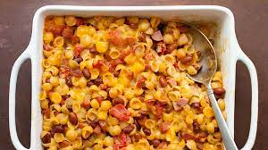
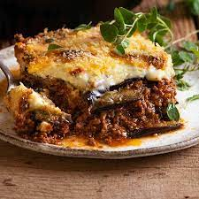
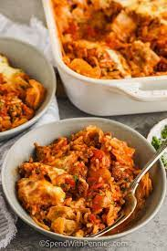
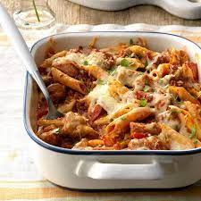
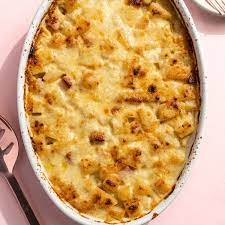

Dog Mac and Cheese

This chili dog mac and cheese combines two of my favorite things to eat—chili dogs and mac and cheese—and manages not to taste all that much like either one, while being wildly successful at being stupendously delicious.
Ingredients
- 1 tablespoon olive oil
- 1 pound ground beef
- 1 large onion, diced
- 2 generous teaspoons kosher salt, plus more to taste
- 3 tablespoons chili powder
- 2 teaspoons ground cumin
- 1 teaspoon smoked paprika
- 1/2 teaspoon freshly ground black pepper
- 1/8 teaspoon ground cinnamon
- 1/8 teaspoon cayenne pepper, or to taste
- 1/2 teaspoon dried oregano, preferably Mexican oregano
- 4 cloves garlic, minced
- 1 cup diced green peppers
- 1 pound hot dogs, sliced
- 1 (28 ounce) can crushed tomatoes (or 3 1/2 cups tomato sauce or puree)
- 2 1/2 cups water
- 2 rounded cups elbow macaroni
- 8 ounces shredded white Cheddar cheese
- 8 ounces shredded Monterey Jack cheese
- green onions, sliced, for the top (optional)
Procedures
- Add olive oil to a large pot and place over high heat. Add beef; cook and stir, breaking up with a spoon or spatula, about 2 minutes. Add onions and salt, and cook, stirring, until beef is crumbly, and onions turn translucent, about 5 minutes.
- Add the chili powder, cumin, paprika, black pepper, cinnamon, cayenne, dried oregano, and garlic. Cook, stirring, for about 2 minutes.
- Add peppers, sliced hot dogs, crushed tomatoes, and water. Stir together; bring the mixture to a simmer. Reduce heat to medium-low and simmer, stirring occasionally, until cooked to your taste, at least 30 minutes. Taste and adjust seasoning.
- Once chili is nearly ready, fill a large pot with lightly salted water and bring to a rolling boil. Stir in macaroni and return to a boil. Cook pasta uncovered, stirring occasionally, 1 minute less than specified in package directions, until not quite tender, and still firm to the bite, about 8 to 11 minutes.
- Meanwhile, preheat the oven to 400 degrees F (200 degrees C).
- Turn off heat under chili, drain macaroni, and add to the pot of chili. Stir until combined, and transfer mixture into a large, deep (15x10-inch) baking dish.
- Mix Cheddar and Monterey Jack cheeses together in a bowl, and transfer about 60% of cheese to top of chili mixture. Use a spoon to thoroughly mix cheese into the casserole.
- Apply remaining cheese evenly over the top, and lightly poke down into the surface with the tip of a spoon.
- Bake in the preheated oven until bubbly, 30 to 35 minutes. Let rest 15 minutes before serving, topped with green onions.
Mousaka

This moussaka tastes great! Layers of sliced eggplant are baked in a ground beef sauce and smothered in a creamy white béchamel sauce in this classic Greek dish.
Ingredients
- 3 eggplants, peeled and cut lengthwise into 1/2 inch thick slices
- salt to taste
- ¼ cup olive oil
- 1 tablespoon butter
- 1 pound lean ground beef
- 2 onions, chopped
- 1 clove garlic, minced
- ground black pepper to taste
- 2 tablespoons dried parsley
- ½ teaspoon fines herbs
- ¼ teaspoon ground cinnamon
- ½ teaspoon ground nutmeg, divided
- 1 (8 ounce) can tomato sauce
- ½ cup red wine
- 1 egg, beaten
- 4 cups milk
- ½ cup butter
- 6 tablespoons all-purpose flour
- ground white pepper, to taste
- 1 ½ cups freshly grated Parmesan cheese
Procedures
- Lay eggplant slices on paper towels; sprinkle lightly with salt. Let sit for 30 minutes to draw out moisture, then pat dry with paper towels.
- Warm olive oil in a skillet over high heat. Fry eggplant until browned, 2 to 3 minutes per side. Drain on paper towels; set aside.
- Melt 1 tablespoon butter in a large skillet over medium heat. Stir in ground beef, onions, and garlic; season with salt and black pepper. Cook and stir until beef is browned, 8 to 10 minutes.
- Add parsley, fines herbs, cinnamon, and 1/4 teaspoon nutmeg. Pour in tomato sauce and wine; mix well. Simmer for 20 minutes. Allow to cool, then stir in beaten egg.
- Scald milk in a saucepan over medium heat.
- At the same time, melt 1/2 cup butter in a large skillet over medium heat.
- Whisk flour into butter until smooth. Lower heat; gradually pour in scalded milk, whisking constantly until it thickens. Season béchamel sauce with salt and white pepper.
- Preheat the oven to 350 degrees F (175 degrees C). Grease a 9x13-inch baking dish.
- Arrange a single layer of eggplant in the prepared baking dish.
- Cover eggplant with meat sauce, then sprinkle 1/2 cup Parmesan cheese on top. Cover with remaining eggplant and sprinkle another 1/2 cup cheese on top.
- Pour béchamel sauce on top and sprinkle with remaining 1/4 teaspoon nutmeg. Cover with remaining cheese.
- Bake in the preheated oven until bubbly and browned, about 1 hour.
- Serve hot and enjoy!
Cabbage Roll Casserole

My cabbage roll casserole has all the ingredients of stuffed cabbage rolls but is a lot easier to make! This basic recipe will appeal to everyone but if you prefer more flavor, consider adding crushed garlic, paprika, thyme, or cayenne pepper.
Ingredients
- 2 pounds ground beef
- 3 ½ pounds chopped cabbage
- 1 (29 ounce) can tomato sauce
- 1 cup chopped onion
- 1 cup uncooked white rice
- 1 teaspoon salt
- 2 (14 ounce) cans beef broth
Procedures
- Preheat the oven to 350 degrees F (175 degrees C) and gather all ingredients.
- Heat a large skillet over medium-high heat. Cook and stir ground beef in the hot skillet until browned and crumbly, 5 to 7 minutes. Drain and discard grease.
- Combine cabbage, tomato sauce, onion, rice, and salt in a large mixing bowl. Stir in cooked ground beef. Pour mixture into a 9x13-inch baking dish, then pour beef broth over top.
- Cover and bake in the preheated oven for 1 hour.
- Stir, re-cover, and bake until cabbage is tender and rice is done, 20 to 30 minutes more.
- Serve hot and enjoy!
Chicken Penne Casserole

Creamy, flavorful and so easy to fix. This meal-in-one will wow family and friends. Makes a lot, so freeze some or halve the recipe.
Ingredients
- ½ cup seasoned bread crumbs
- ½ cup grated Parmesan cheese
- 1 tablespoon olive oil
- 1 (16 ounce) box penne pasta
- 6 cups cubed cooked chicken
- 4 cups shredded Italian cheese blend
- 3 cups fresh baby spinach
- 1 (15 ounce) can crushed tomatoes
- 1 (15 ounce) jar Alfredo sauce
- 1 (15 ounce) jar pesto sauce
- 1 ½ cups milk
Procedures
- Preheat an oven to 350 degrees F (175 degrees C). Grease a 9x13-inch baking dish. Combine the bread crumbs, Parmesan cheese, and olive oil in a small bowl until evenly moistened; set aside.
- Fill a large pot with lightly salted water and bring to a rolling boil over high heat. Once the water is boiling, stir in the penne, and return to a boil. Cook the pasta uncovered, stirring occasionally, until the pasta has cooked through, but is still firm to the bite, about 11 minutes. Drain well in a colander set in the sink.
- Meanwhile, combine the chicken in a bowl with the Italian cheese blend, spinach, tomatoes, alfredo sauce, pesto sauce, and milk. Stir in the pasta once done, and scoop into the prepared baking dish. Top with the bread crumb mixture.
- Bake in the preheated oven until bubbly and golden brown on top, 40 to 45 minutes.
Ham, Potato and Brocolli Casserole

This is a great, easy to make, and nutritious casserole. You can add some macaroni pasta or try seasoning the potatoes before you bake. Put this dish in the freezer and bake whenever you're too lazy to cook! Can also be made with leftover cooked chicken.
Ingredient
- 1 (16 ounce) package frozen French fries
- 1 (16 ounce) package frozen chopped broccoli
- 1 ½ cups cooked, cubed ham
- 1 (10.75 ounce) can condensed cream of mushroom soup
- 1 (10.75 ounce) can milk
- ¼ cup mayonnaise
- 1 cup grated Parmesan cheese
Procedures
- Preheat oven to 375 degrees F (190 degrees C).
- Spray a 9x13 inch baking dish with cooking spray. Cover bottom of dish with layer of French fries. Add a layer of broccoli, then sprinkle ham evenly over broccoli. In a small bowl mix together soup, milk and mayonnaise. Pour mixture evenly over ingredients in baking dish and sprinkle with cheese.
- Bake uncovered in preheated oven for 40 minutes.
back to Homepage